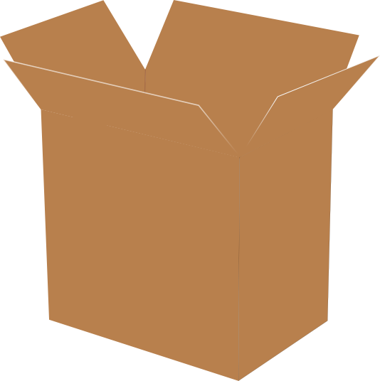
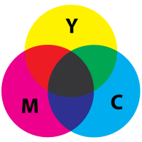
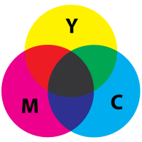
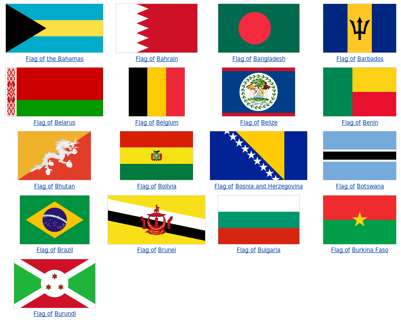
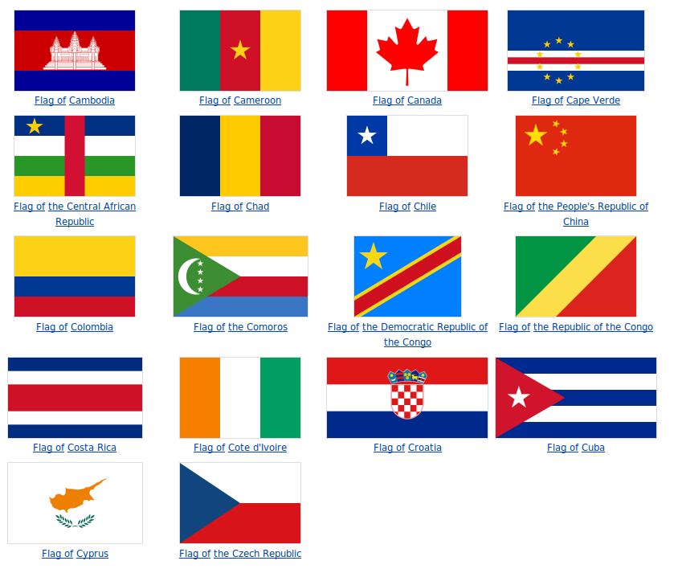

Uso de las luz y color
Uso de Luz
Como fue el caso con las fotos, conseguir la iluminación correcta
es muy importante para que los gráficos se vean bien. Sin
embargo, al contrario de las fotos con las que tuvimos que trabajar con
la luz que la cámara había capturado, la cual sólo podía mejorarse un
poco -- en el caso de los gráficos tenemos control total sobre cómo la
iluminación afecta a la imagen. Sin embargo, todo ese control
significa que tenemos que planificar de antemano y determinar cuánta
iluminación deseamos, mientras que con las fotos podíamos simplemente
mirar lo que se nos daba y averiguar cómo hacerlo ver lo mejor posible.
Aquí hay un ejemplo de una caja de cartón abierta, con nada de iluminació aplicada.

Y aquí está la misma caja, ahora con iluminación aplicada.
¡Es
fácil ver la diferencia! En este caso, el autor imaginó una
fuente de luz localizada encima y un poco a la izquierda de la
caja. Entonces puedes ver a sombre que viene hacia abajo y hacia
la derecha. Además, el lado cercano-derecho de la caja es más
oscuro que el lado cercano-izquierdo, porque hay un poco de luz
llegando directamente al cercano-izquierdo, mientras que el lado
cercano-derecho está en la sombra. También, el interior de la
caja está ensombrecido porque los lados limitan cuánta luz puede entrar.
Si miras de cerca te puedes dar cuenta de que no hay manera en que la
caja podría ser realmente iluminada de esta manera: los ángulos de
iluminación simplemente no son posibles, pero eso no es lo importante
ahora. Lo que importa en este momento es que hay aspectos de
iluminación, y que esto le provee al ojo con lo suficiente para separar
las diferentes superficies, a diferencia de la primera imagen. En
los gráficos, a diferencia de las fotos, no es necesario hacer que la
iluminación sea precisamente realista, ya que la audiencia no espera
eso de los gráficos; pero sí tiene que ser lo suficientemente realista
para satisfacer a los ojos.
Usando Colores
Cuando el ojo humano ve colores, en realidad
está recibiendo ondas eléctricas de luz que están tocando células en la
parte posterior del ojo. Una sola partícula de luz se llama un
fotón, y cada fotón oscila a una frecuencia específica, que corresponde
a un largo de onda. Fotones con una frecuencia más rápidia (y por
ende un largo de onda más corto), están hacia el extremo violeta del
espectro, mientras que fotones con una frecuencia baja (y un largo de
onda más largo) están hacia el extremo rojo del espectro.
Abajo hay una gráfica representado el espectro de luz visible.

Te
podrás dar cuenta de que los dos extremos son oscuros; estos realmente
no son oscuros, sino que brillan tanto como en el centro -- pero en los
colores infrarojos y ultravioletas que el ojo humano no puede detectar.
Los colores arriba son los únicos colores que el ojo humano puede
detectar. Puedes ver que hay uchos colores ausentes: marrón,
morado, blanco, negro y gris. Esto es porque estos colores en
realidad no existen, sino que los percibimos por la manera en que los
fotones de luz llegan a nuestros ojos. Para aprender más sobre el
espectro de luz visible, vea esta página: http://en.wikipedia.org/wiki/Visible_spectrum
http://es.wikipedia.org/wiki/Espectro_visible
Cuando vemos un área que es negra, esto es porque muy pocos o casí
ningún foton esta llegando a nuestros ojos desde esa direccion.
Del otro modo, cuando vemos un área de color blanco, estamos recibiendo
muchos fotones, de cada uno de los colores, llegando a nuestros
ojos. El color gris es simplemente entre estos dos extremos,
cuando vemos un número mediano de fotones (demasiados = blanco, muy
pocos = negro), de varias colores de luz, veremos el color gris.
Todos los otros colores se consiguen cuando fotones de dos o más
secuencias distintas llegan a la misma parte del ojo al mismo
tiempo. Por ejemplo, si tenemos dos fotones rojos para cada fotón
verde (y sólo esos colores), veremos el color marrón en esa área.
Si vemos un fóton rojo y un fotón azul, veremos el morado.
Entonces, el brillo del color se determina por el número total de
fotones, y el color se determina por la frecuencia o combinación de
frecuencias que tienen los fotones cuando llegan a nuestros ojos.
Como aprendimos en la sección de fotos, cuando una pantalla de
computadora proyecta luz hacia nuestros ojos, está projectando sólo los
colores rojo, verde y azul. Estos colores se pueden sumar para
hacer todos los otros colores. Sin embargo, cuando imprimimos una
imagen en una hoja de papel, el papel no está proyectando la luz a
nuestros ojos de la manera en que la pantalla hizo; en lugar de eso,
está reflejando la luz del cuarto donde se encuentre. Cuando
estuvimos proyectando luz, comenzamos con negro y añadimos colores
hasta llegar al color deseado...si queríamos el color blanco añadíamos
todos los colores. Sin embargo, cuando reflejamos luz, comenzamos
con unal luz blanca y vamos restando partes de esa luz a través de ir
absorbiendo los fotones de ciertos colores, de manera que solo el color
deseado termine siendo reflejado. Si absorbimos toda la luz y no
reflejamos nada de luz, entonces terminamos con el color negro.
Por esta razón, las impresoras usan los colores, Magenta, y
Amarillo (Yellow) para sus impresiones. El color Cyan absorbe el
rojo, el color Magenta absorbe el verde, y el color amarillo absorbe el
azul.
 

Para más sobre colores "subtractivos", vea: http://en.wikipedia.org/wiki/Subtractive_color
http://es.wikipedia.org/wiki/Síntesis_sustractiva_de_color
Como puedes ver en las imágenes de la caja, en la seccion anterior
sobre la iluminación, los cambios de iluminacion afectaron el color de
la imagen, y es importante que los colores que uses reflejen la
iluminación que le estás aplicando a tu imagen. Sin embargo,
decisiones de color más generales también afectarán a tu imagen.
Si estás estás tratando de crear una representación de algo real, como
una caja o un bosque, entonces necesitaras que tus colores estén cerca
de los colores realistas para esos objetos. Por otro lado, a
veces estarás creando gráficos que no corresponden a objetos
reales. Por ejemplo, en el logotipo para una compañía o el texto
de un volante. En este caso, necesitas combinaciones de colores
que trabajen bien juntos y no contrasten de forma abrupta.
desafortunadamente, los colores que trabajan y que no trabajan bien
juntos varíen de acuerdo a culturas. Los colores que trabajan
bien juntos en los Estados Unidos no se venbien juntos en Africa.
De esa misma manera, colores que no combienene en India puede que
combien en Perú. Para ver un ejemplo sencillo de esto, veamos una
serie de banderas de países distintos. Cada país escoje una
bandera con colores que combinen en su país en particular, pero estoy
seguro que puedes ver algunos colores que se ven y no se ven como si
combinaran bien en tu propia cultura!



Estos son solo los países cuyos nombres comienzan con las letras a,
b, y c, y ya hay una gran cantidad de combinaciones de
color. Podríamos pasar un largo tiempo discutiendo teorías
sobre cuáles colores se ven bien juntos y cuáles no. De hecho,
muchos artistas habrán tomado varios cursos que se enfocan en estas
teorías. En nuestro caso, simplemente ten en cuenta que hay
colores que combinan mejor que otros, y trata de buscar esas
combinaciones de colores a medida que vas creando gráficos. Tal
vez sea una buena idea también preguntar por la opinión de otros sobre
qué colores ellos creen que se verían bien en tu imagen gráfica.